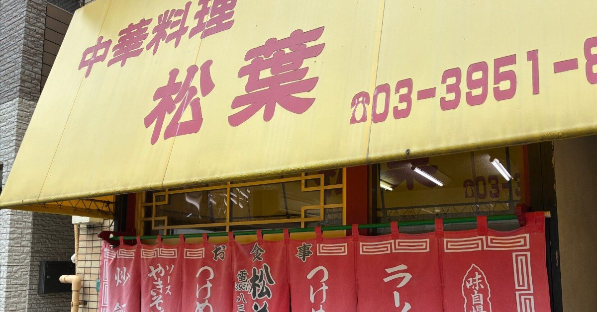
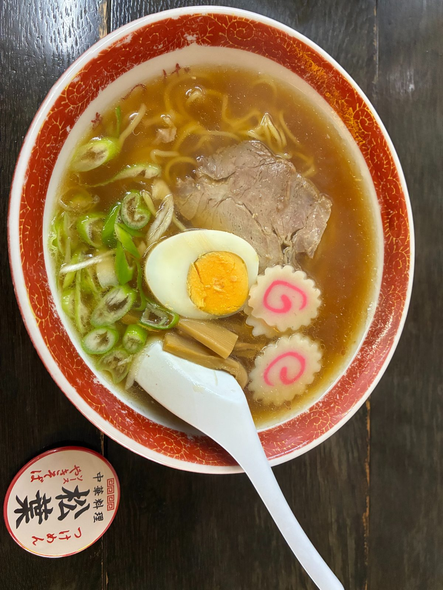

Is the Tokiwaso Manga Museum Worth Visiting? A Practical Guide

Imagine that Osamu Tezuka, the duo behind Doraemon, Fujio Akatsuka and Shotaro Ishinomori all lived in their twenties in the same small wooden apartment building. That building was Tokiwaso, in a quiet residential part of Toshima, Tokyo, and it stood from 1952 to 1982. Today a museum rebuilt to match the original stands nearby.
Is it worth the trip if you have already done Akihabara? I bring guests here on my walks, and my short answer is yes, if you care about the story behind the characters more than the shopping. Here is what you will actually see, how to get there, and the ramen shop nearby that I walked past for months before finally going in.
The basics
- Open 10:00 to 18:00 (last entry 17:30), closed on Mondays and for exhibit changes. Check the official site before you go.
- Entry is free, but special exhibitions can require a ticket. Booking a time slot ahead is a good idea on busy days.
- It is about a 10 to 15 minute walk from Shiinamachi Station on the Seibu Ikebukuro Line, one stop from Ikebukuro.
- Photos are allowed in some areas and not in others. Follow the signs inside.
What it feels like inside
The stairs creak. There is a shared kitchen at the end of the corridor and rooms of four and a half tatami mats, barely enough space for a desk and a futon. Standing in one of them, you can picture young artists working against deadlines, sharing cheap food and talking about what manga could become. The museum does not try to be flashy. It recreates the ordinary rooms, and that is what makes it work.
What surprises most guests is how calm it is. This is one of the most important places in manga history, yet it sits in an ordinary neighbourhood, and the people who come here tend to walk around quietly, almost respectfully. The streets the artists walked every day are still there, so the short walk from the station is part of the visit.
A walk at your own pace
One guest from Switzerland was a lifelong fan of Astro Boy. She had hurt her leg before the tour, so we slowed down and took the backstreets at her pace, stopping whenever she wanted to look at something or talk with people in the neighbourhood. Afterwards she wrote that she had finally seen the place where Tezuka's work was born. For a fan, standing here is the point, and there is no reason to hurry.
Matsuba: the ramen shop from the manga

For months, my tour only stopped in front of Matsuba, a small Chinese restaurant near the old Tokiwaso site, and I would say, "This is the shop." It is famous because the young artists of Tokiwaso ate here, and it appears in Manga Michi, the autobiographical manga by Fujiko Fujio (A). One day I finally went in.
The walls are covered with signed sketches by manga artists. I had brought the first volume of Manga Michi with me and read it at the table while I waited. At the next table, a traveller was quietly photographing the signed boards on a phone. Behind the counter, regulars were chatting. It felt less like a sight and more like a neighbourhood diner that is still very much in use.

The ramen is the old-fashioned kind: clear soy broth, egg, narutomaki and bamboo shoots. Not a creative bowl at all. But that plainness is probably close to what the young artists ate every day, and thinking about that changes how each mouthful tastes. It was 700 yen when I went, and they handed me a small badge with the bill. Since then, Matsuba has been an optional lunch stop on my walk.
Who it is for
Fans who want the story behind the characters more than merchandise, and anyone curious about what Tokyo looked like when manga was being invented. If you want shopping and game centres, Akihabara fits better. If you have half a day, combine the museum, the backstreets and a bowl at Matsuba. Check that the museum is open (it closes on Mondays) and that Matsuba is open on your day before you go.
If you would rather walk it with someone who knows the backstreets, I guide this route in small groups from Shiinamachi Station, with an optional lunch at Matsuba (paid on site) and an extended version that adds the Toei Animation Museum. Dates are on GetYourGuide.
Some links on this page are affiliate links: booking through them supports this site at no extra cost to you.